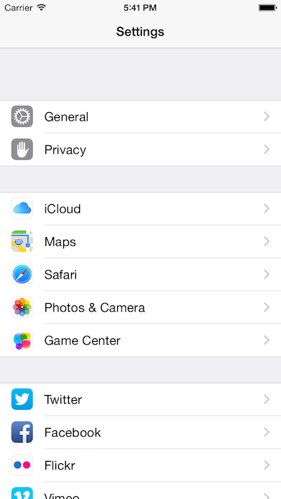

Crea una tabla estática que imite la aplicación de “Settings” de iOS.

Ten en cuenta que las celdas son de tipo “default”. Las imágenes las tendrás que añadir manualmente. Coge una imagen cualquiera.
Tablas dinámicas
Crea una tabla dinámica que muestre en cada fila su número correspondiente (en la fila número 7 aparezca “fila número 7”)
Haz que cuando se seleccione una celda aparezca la marca de celda seleccionada y que cuando se pulse otra vez la marca desaparezca
Añade un icono a las celdas, distinto para las pares e impares
Curiosidad: usa la versión “ingenua” que hemos visto en clase para reservar la memoria para las celdas, que no las reutiliza y compara la memoria que usa con la versión que sí las reutiliza. Para probarlo puedes ir al menú de Product > Profile y seleccionar la misma plantilla que usamos para detectar los ciclos de memoria, la de “leaks”